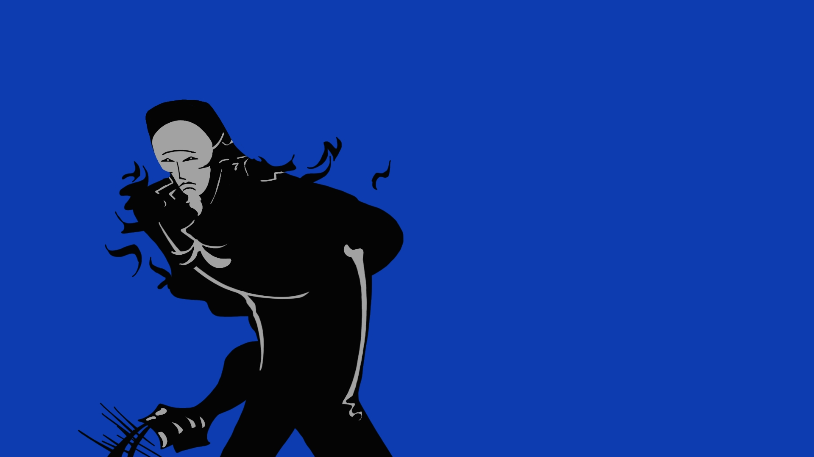
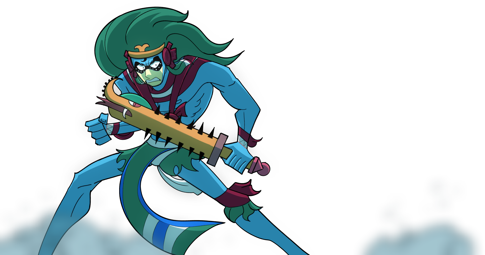
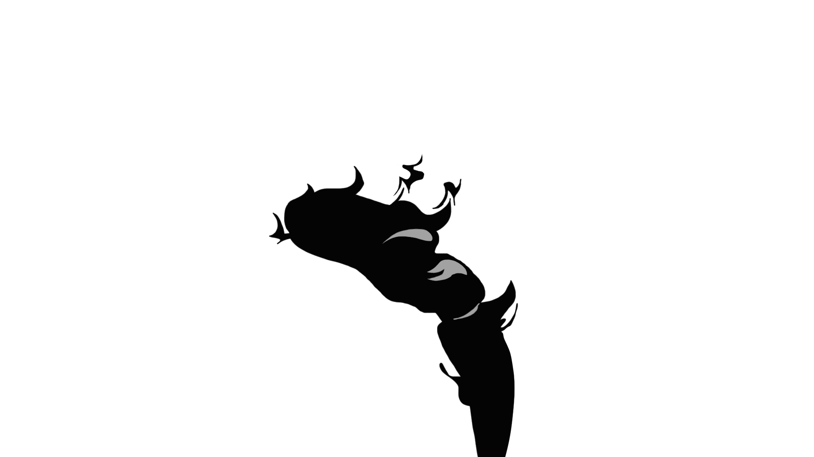
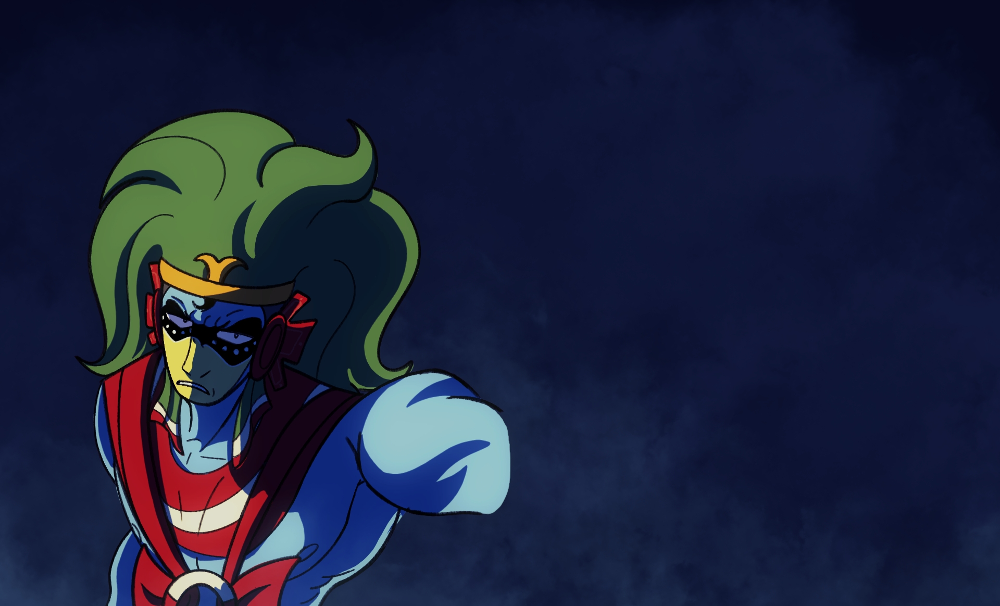
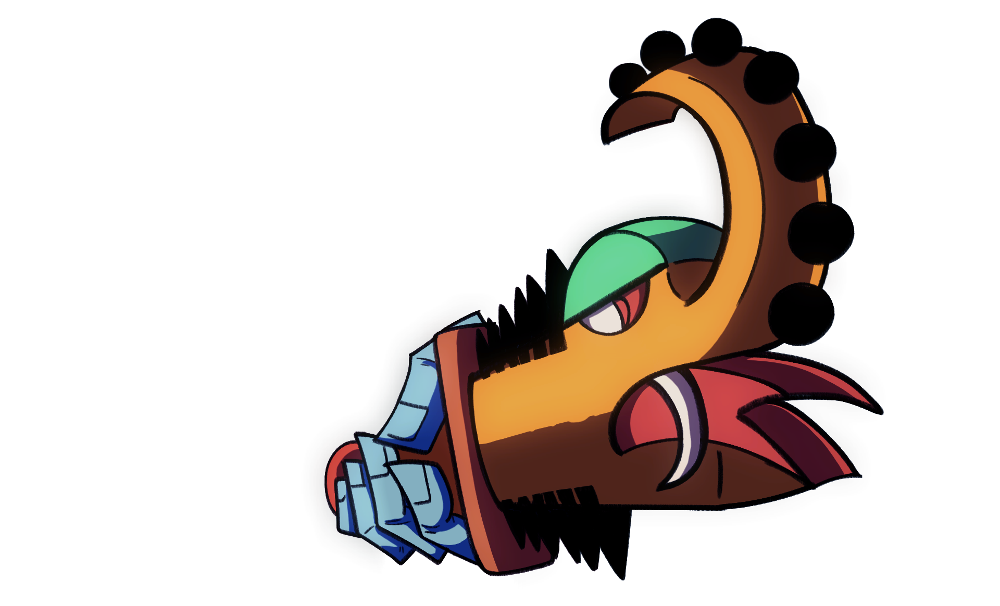

0%



Visual Development & Worldbuilding.

Diseño conceptual y arte de personajes para un universo de fantasía oscura.

Ilustraciones ambientadas en mundos postapocalípticos con estilo gráfico único.

Dirección de arte y visual development para producción cinematográfica.


Soy un artista visual y diseñador especializado en la creación de mundos imaginarios que trascienden lo convencional. Con más de una década de experiencia en la industria del entretenimiento, he trabajado en proyectos que van desde videojuegos de gran escala hasta producciones cinematográficas independientes. Mi enfoque se centra en la narrativa visual, donde cada trazo y cada color cuenta una historia que resuena con quien la observa.